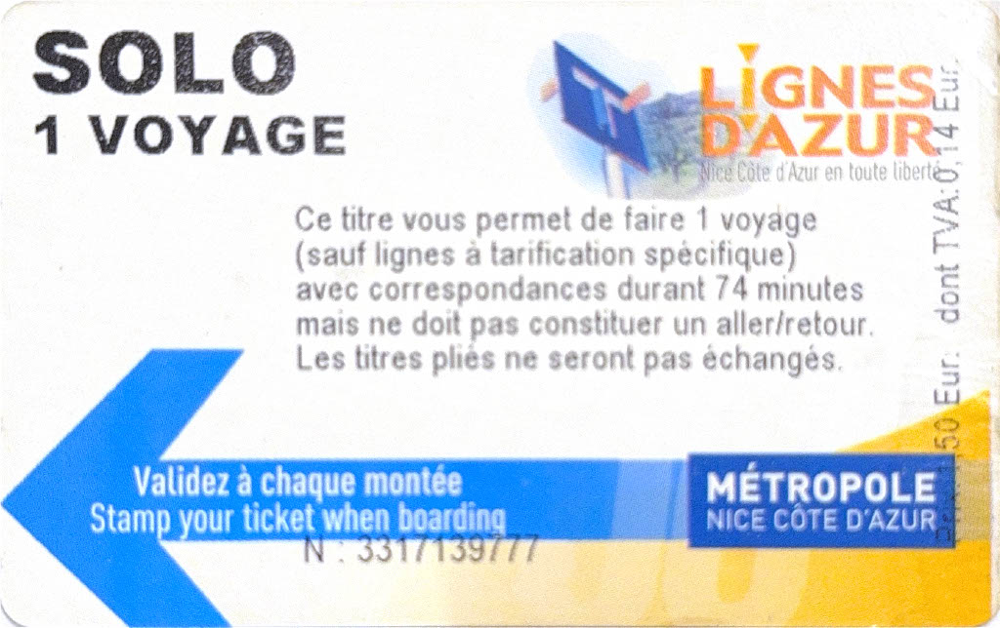
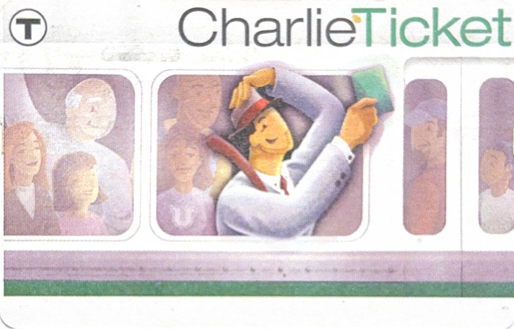

Transit Cards
As a transit and travel enthusiast, I enjoy collecting transit cards from around the world. I think transit cards are compact and iconic pieces of memorabilia that represent and symbolize the cities they're from. I'm lucky to be alive in an era where many places in the world are still using transit cards -- born too late for the age of tokens and born too early for ubiquitous mobile payments!
My favorite cards in my collection are the Tokyo Suica Card (Rinkai version -- only sold at special stations on the Rinkai Line), the London Oyster Card (Elizabeth version -- special 2022 edition to commemorate the Elizabeth Line), and the Seattle Oyster Card (blue version -- since replaced with new black cards). What cards should I add to my collection next???
Asia
Almaty Smart Card
Dubai Nol Card
Hong Kong Octopus Card
Seoul Korea Tour Card
Seoul T-Money Card
Shanghai Maglev and Metro Pass
Shanghai Public Transportation Card
Shanghai Single Journey Ticket
Singapore NETS Flashpay Card
Taipei EasyCard
Tokyo Suica Card
Tokyo Suica Card (Rinkai Edition)
Tokyo Suica Card (Monorail Edition)
Tokyo Welcome Suica Card
Tokyo PASMO Card
Tokai TOICA Card
Europe
Amsterdam OV-chipkaart
Brussels MoBIB Card
Copenhagen Rejsekort
Lisbon Navegante Card
London Oyster Card
London Oyster Card (Elizabeth Edition)
Madrid Tarjeta Transporte Público
Málaga Metro Card
Nice Lignes d'Azur Card
Paris Navigo Card

Stockholm SL Card
North America
Atlanta Breeze Card
Boston Charlie Ticket
Chicago Ventra Card
Los Angeles TAP Card
Montréal OPUS Card
New York MetroCard (!!!)

New York OMNY Card
New York SmartLink Card

Philadelphia SEPTA Key Card
San Francisco Clipper Card
Seattle ORCA Card (Blue)
Seattle ORCA Card (Black)
Washington D.C. SmarTrip Card
South America
Buenos Aires SUBE Card
Montevideo STM Card